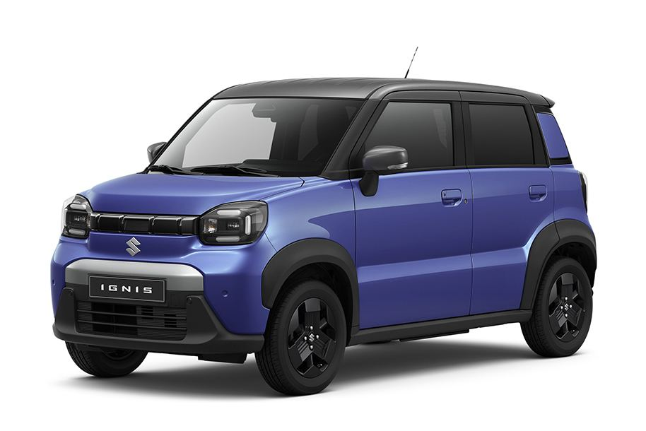

Suzuki 鈴木 · 全球首發 · 日本2026-11-25
Suzuki 首款小型電動車：全新 Ignis 純電化，懸浮車頂配數字造型燈號
Suzuki Unveils Its First Compact EV, the All-New Ignis in World Premiere
Suzuki 11/25 在線上全球首發全新 Ignis，這是品牌第一款小型純電車，2027 年夏天起先在歐洲等市場陸續開賣。開發概念是「Easy to Switch」，讓從燃油車或大車換過來的人也能很快上手，並在歐洲城市與山路做了大量實路測試。
設計解析 Design Notes
- 三個關鍵字設計以「Smart、Iconic、Cozy」為主軸，想同時保有親切感和新鮮感。
- 懸浮車頂流暢的肩線加上懸浮式車頂，讓方正的小車看起來更輕巧。
- 數字燈號前後 LED 燈組的光型取材自數位數字，一眼就能認出是 Ignis。
- 包覆座艙圓潤線條從儀表板一路延伸到門板，寬螢幕旁配一個陶器意象的置物盤，營造溫暖感。